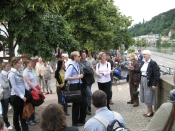

Die Aktivitäten der Gesellschaft der Freunde sind so vielfältig wie ihre Aufgaben. Hier ein kurzer Überblick.

Veranstaltungen
Begegnungen brauchen Anlässe. Damit unsere Mitglieder miteinander und mit der Universität im Gespräch bleiben, organisieren wir Vorträge, Ehemaligen-Treffen, Lesungen oder Exkursionen unter fachkundiger Führung. Und natürlich laden wir einmal jährlich im Sommer zum Tag der Freunde ein.
Sektionen
In unseren bislang sieben Sektionen entwickeln die Sektionsleiter, zumeist aktive Heidelberger Professor:innen und Alumni, fachspezifische Kontakt- und Informationsangebote. Mehr zu den Sektionen →
Fördern
„Ohne Moos, nichts los.“ Wir suchen und finden großherzige Unterstützer und Partner, die uns beim Helfen helfen – von der Alumni-Arbeit bis zur Digitalisierungswerkstatt der Universitätsbibliothek. Mehr →
Preise
Gute Ideen und besondere Leistungen studentischer Gruppen, einzelner Studierender sowie junger Wissenschaftler:innen verdienen Anerkennung – mit dem Preis der Freunde sowie individuellen Beihilfen und Zuschüssen zu studentischen Vorhaben.